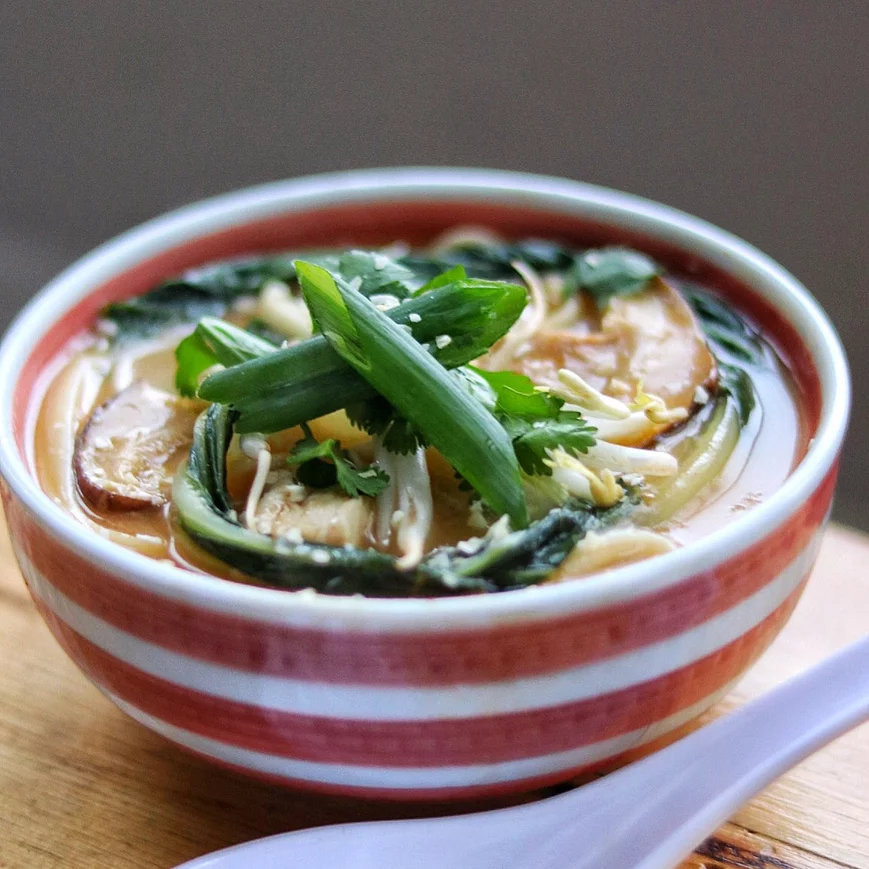

Chicken Udon Noodle Soup

Description
Chicken Udon Noodle Soup
Ingredients
- 1 ½ (32 fluid ounce) containers chicken stock
- 1 clove garlic, minced
- 1 tablespoon minced fresh ginger root
- 1 teaspoon chili powder
- 1 large cooked skinless, boneless chicken breast, chopped
- 1 head bok choy, chopped
- ¾ cup rolled oats
- ¼ cup dried shiitake mushrooms
- 2 (7 ounce) packages dried udon noodles
- ½ cup mung bean sprouts
- 1 green onion, sliced diagonally
- 2 tablespoons dried minced onion
- 1 tablespoon chopped fresh cilantro
Steps
- Bring chicken stock, garlic, ginger, and chili powder to a boil in a pot over medium-high heat. Add chicken, bok choy, and mushrooms; let simmer lightly for 3 minutes. Add noodles and cook soup for 4 minutes more.
- Pour soup mixture evenly into 2 soup bowls. Place mung beans on top in the center of each bowl, with green onion placed neatly on top. Sprinkle dried onions and cilantro on top.
Main Page